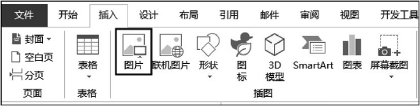
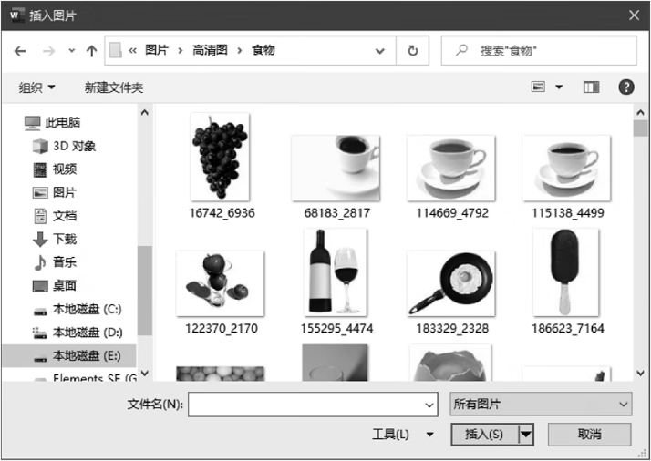
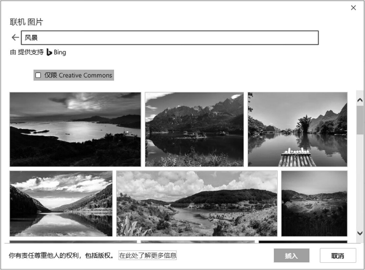
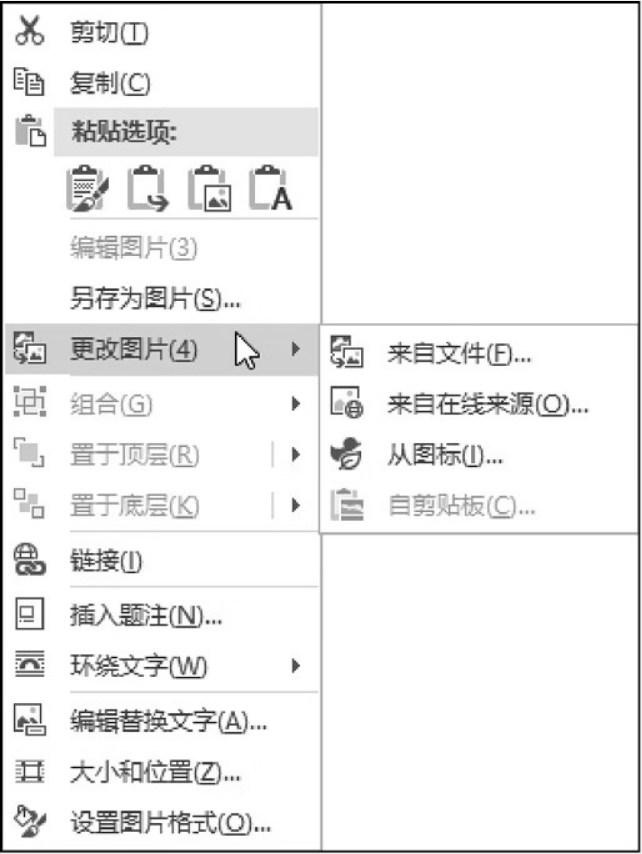
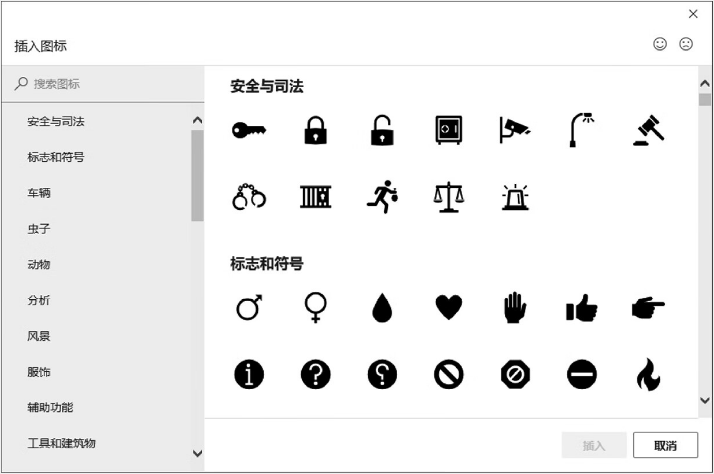

首页 > 编程笔记
Word插入图片（3种方法）
在 Word 文档中插入图片有以下几种方式：
下面主要介绍插入图片文件、插入联机图片和插入图标 3 种方式。
① 将插入点定位到要放置图片的位置，然后在功能区的【插入】选项卡中单击【图片】按钮，如图1所示。
② 打开【插入图片】对话框，定位到图片所在的文件夹，然后双击要插入的图片，如图2所示，即可将图片插入文档中。
① 将插入点定位到要放置图片的位置，然后在功能区的【插入】选项卡中单击【联机图片】按钮。
② 打开【联机 图片】对话框，在搜索框中输入用于描述图片的关键字，例如“风景”，然后按 Enter 键，将显示与关键字相关的图片，如图3所示。
选择所需的一张或多张图片，然后单击【插入】按钮，即可将其插入文档中。
- 插入图片文件：插入计算机中存储的图片。
- 插入联机图片：插入互联网上的图片。
- 插入剪贴画：插入 Office 剪辑库中的剪贴画。
- 插入屏幕截图：插入由 Word 从屏幕中截取的图片。
- 插入图标：这是 Word 2019 的一项新功能，插入需要的图标。
下面主要介绍插入图片文件、插入联机图片和插入图标 3 种方式。
1. 插入图片文件
在文档中插入图片文件的操作步骤如下。① 将插入点定位到要放置图片的位置，然后在功能区的【插入】选项卡中单击【图片】按钮，如图1所示。

图1：单击【图片】按钮
图1：单击【图片】按钮
② 打开【插入图片】对话框，定位到图片所在的文件夹，然后双击要插入的图片，如图2所示，即可将图片插入文档中。

图2：双击要插入的图片
图2：双击要插入的图片
2. 插入联机图片
在文档中插入联机图片的操作步骤如下。① 将插入点定位到要放置图片的位置，然后在功能区的【插入】选项卡中单击【联机图片】按钮。
② 打开【联机 图片】对话框，在搜索框中输入用于描述图片的关键字，例如“风景”，然后按 Enter 键，将显示与关键字相关的图片，如图3所示。

图3：使用关键字搜索图片
图3：使用关键字搜索图片
选择所需的一张或多张图片，然后单击【插入】按钮，即可将其插入文档中。
技巧
如需在图片所在的原位置更换图片，而保留该图片在文档中的原始位置、大小和样式等格式信息，则只需右击要更换的图片，在弹出的菜单中选择【更改图片】命令，然后在子菜单中选择图片的来源，如图4所示，最后选择所需的图片即可。

图4：选择图片的来源
图4：选择图片的来源
3. 插入图标
Word 2019 中新增了插入图标的功能，用户只需在功能区的【插入】选项卡中单击【图标】按钮，然后在打开的对话框中双击所需的图标，即可将其插入文档中。【插入图标】对话框如图5所示。

图5：【插入图标】对话框
图5：【插入图标】对话框
提示
可以使用【插入图标】对话框左上方的搜索框快速查找所需的图标。关注公众号「站长严长生」，在手机上阅读所有教程，随时随地都能学习。内含一款搜索神器，免费下载全网书籍和视频。

微信扫码关注公众号